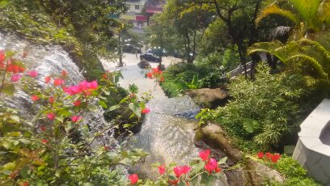
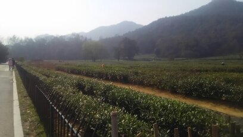
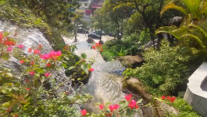
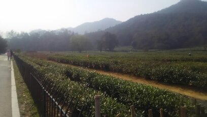
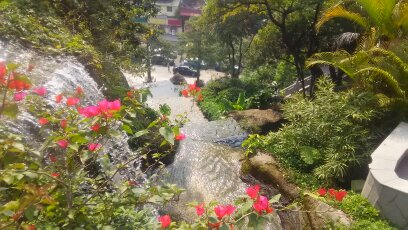
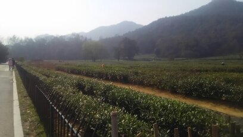

Profile
 



自己紹介
初めまして、私は畑迫睦和と申します。 大学のときに初めてプログラムを学び、システム開発の仕事に興味を持ちました。 会社ではWindowsの業務アプリの開発、テストをしています。個人ではWEB系の開発をしています。 プロフィールの写真は以前中国に3週間旅行に行ったときの写真です。お楽しみいただけたら幸いです。
WEB Engineer


初めまして、私は畑迫睦和と申します。 大学のときに初めてプログラムを学び、システム開発の仕事に興味を持ちました。 会社ではWindowsの業務アプリの開発、テストをしています。個人ではWEB系の開発をしています。 プロフィールの写真は以前中国に3週間旅行に行ったときの写真です。お楽しみいただけたら幸いです。
HTML5
CSS3
javascript
Ruby, C#, C++, C
Ruby on Rails
.net
CACHE, Oracle
Postgresql
Atom editor
Git hub
CodeAnywhere
Heroku
説明
当サイトです。自分でJS組んででページをスライド遷移させています。Worksでの詳細の表示非表示はjavascriptで実装しています。最終的にはスクロール時のアニメーションやWorkの表示、非表示時にスライドして表示させるようなアニメーションを実装する予定です。
使用した技術
HTML5,CSS,JQuery
説明
個人が簡単なバイクのブログを作ることができ、 また他のユーザーの投稿を見て共有したりできます。 個人でバイクブログを作っている方はよくいるかもしれませんが、 そのブログを集めてひとつのサイトに集約しすることで、 それぞれのバイクLifeを見たユーザーが新たな発見や楽しみ方を知るきっかけになるのではないかと考えています。後々は、このサイトを通じて知り合った方がツーリングに行けたり 趣味のつながりを広げるきっかけも作りたいという思いもあります。なので最終的にはブログから、バイクツーリングマッチングサイトにも発展させていけたらと考えています。現在投稿内容と、写真が一致しないという不具合を発見し、修正中です。
使用した技術
Ruby on Rails,Ruby,HTML5,CSS, Postgresql,CodeAnywhere,HerokuToolbelt
URL
なし
説明
個人プロジェクト用のソース管理をするために作成しました。
使用した技術
Raspberry Pi 3 Model B,Git,Term Viewer Cliant,Xrdp
もし、私や作品に興味がございましたら、
お気軽にご連絡ください。
h.yoshikazu0110@gmail.com